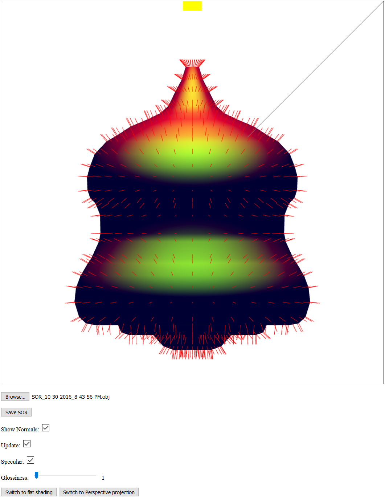

Name: Mackenzie Glynn
Login ID: mglynn
ASN#: Lab 3
Date: 10/29/2016
Implemented:
- Increased screen dimensions
- 2nd light source.
- Picking objects to toggle light
- Orthographic/Projection toggle
- Update function which moves light since a point light at (0, 500, 0) is hard to see
- Since clicking the line is sometimes difficult, clicking the SOR itself toggles the directional light.
This feature will be pulled out once clicking the SOR itself serves a purpose.
- Assignment
Screenshot:
